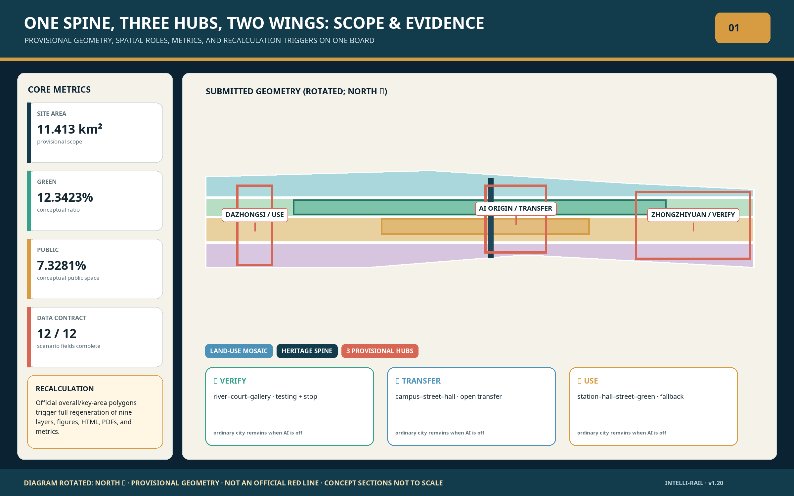
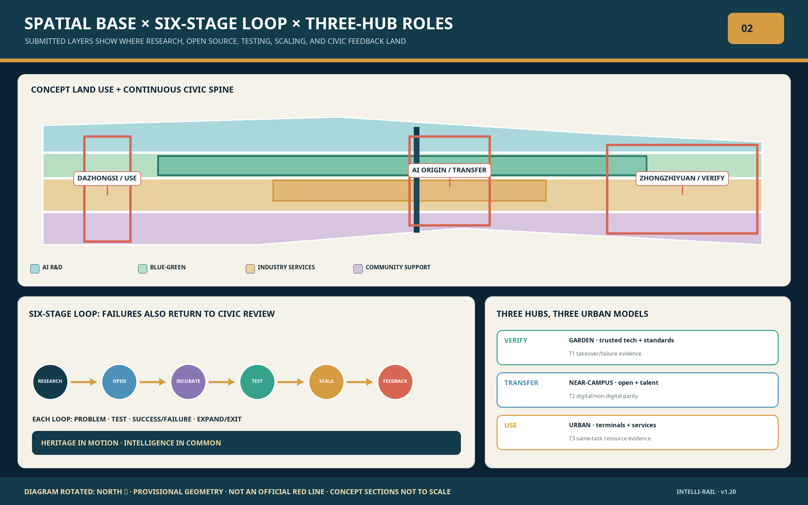
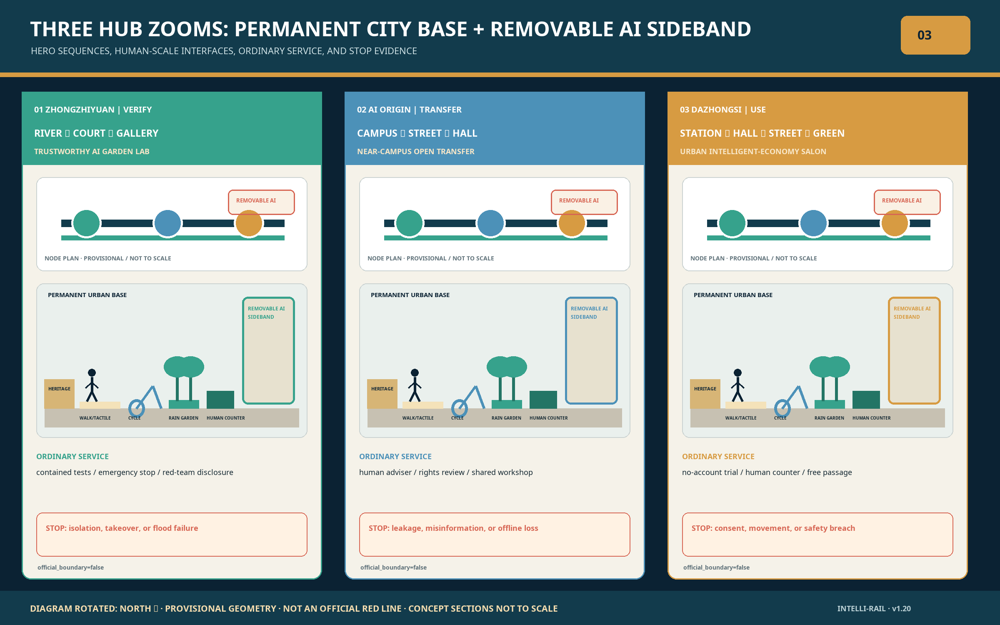
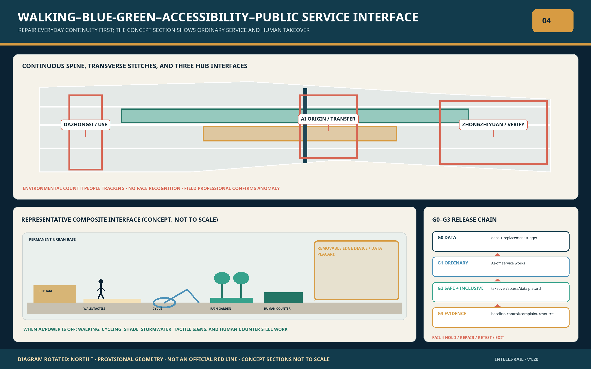
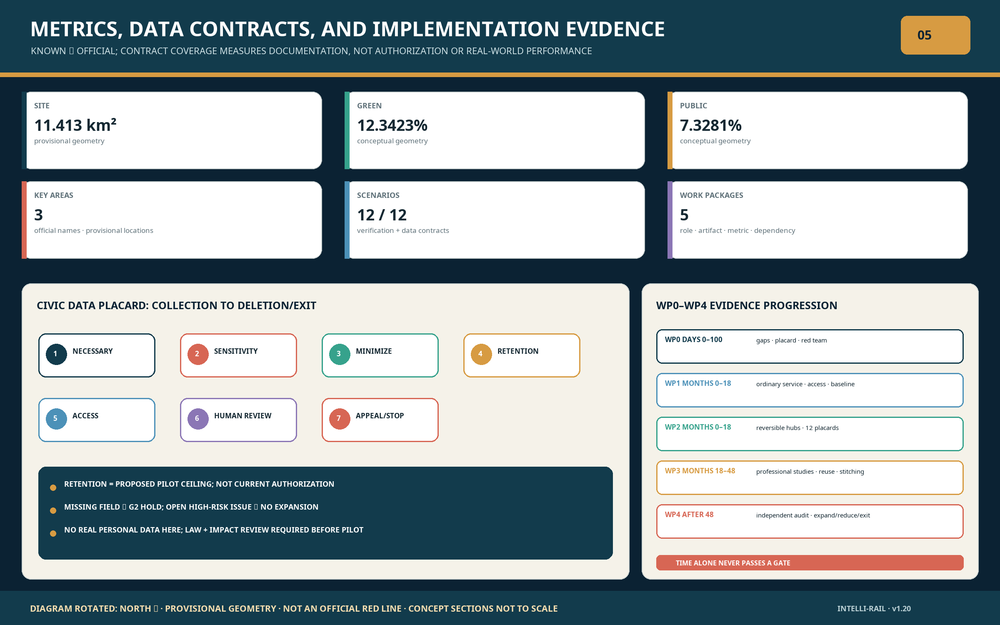

Reproducible Core Metrics
site_area_sqm11.413 km²
green_ratio12.3423%
public_space_ratio7.3281%
key_area_count3
One-Page Read: VERIFY · TRANSFER · USE
Proposal Reading Index





Twelve Scenarios / Three Testbeds
- S01Open-Source Release
- S02Trustworthy AI Sandbox
- S03Edge Compute
- S04Walking-Gap Diagnosis
- S05Accessible Companion
- S06Qinghe Low-Carbon
- S07Transfer Street
- S08Talent Daily Life
- S09Terminal Experience
- S10Data Compliance
- S11Memory Route
- S12Global AI Week
Evidence and Governance Boundary
Every scenario needs an operator, data card, human review, appeal, and exit mechanism. Statutory, ownership, utility, and engineering conclusions remain unknown without official evidence.
sources.json · assumptions.json · compliance_matrix.json · standard_matrix.json · design_depth_matrix.json · self_check.json